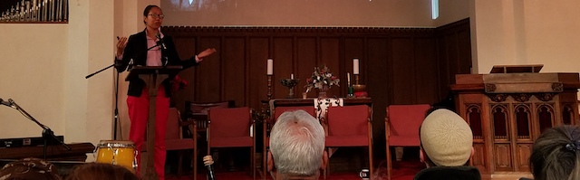

2018-01-21 08:00

On January 20, a conference entitled “Mass Incarceration as a New Jim Crow” was held at All Souls Church of Braintree, Massachusetts, on a topic that concerns everyone — mass incarceration and its implications. Well organized and attended, the conference featured a panel of five guests.
The conference began with an historical overview of the “Old Jim Crow” presented by Dr. Elizabeth Herbin-Triant from UMass Lowell, dealing primarily with the period following the Civil War and Reconstruction. Dr. Jon Huibregtse from Framingham University followed Dr. Herbin-Triant with an overview of historical changes and context through the post World War II period.
The speakers focused on the idea that the implementation of Jim Crow laws and lynchings served a larger purpose of maintaining a powerless work force, preventing growth of an independent economy beyond control by the white ruling class, and suppressing dissent. At the same time, the widespread popularity of spectacle lynchings and retribution indicates the depth of a culture of racism that goes beyond the upper classes.
With the Supreme Court case of Plessy v. Ferguson, which allowed for “separate but equal” institutions, systemic racism was fully established. Lynchings and extra-judicial executions continued, but grew less as other institutions assumed these functions, most notably an explosion in incarceration and legalized racism, combined with political disenfranchisement. One of the most shocking statistics was that of registered black men in Louisiana, which declined from 130,000 in 1896 to 1,232 in 1904!
Following the historical overview, the panel spoke and took questions from the audience. Franklin Baxley from the Criminal Justice Policy Coalition spoke to the human toll and incredible inequities of the current system. Rahsaan Hall, Director of the ACLU Racial Justice Program, spoke eloquently of the economic and social mechanisms by which systemic racism enables the “pipeline” from schools to prison. Susan Tordella, of E.M.I.T. (End Mass Incarceration Today) spoke of the need to include incarcerated people as participants in the discussion.
Several members of the audience then jumped into the discussion, asking questions about the economics and politics of mass incarceration, the possibilities of change, and methods of organizing. This led directly to the discussion after the break as to what the situation is today in Massachusetts and what is to be done. Several organizations were mentioned in addition to the speakers’ own groups.
Susan Tordella discussed the status of the CJ Omnibus Bill, which, though far from perfect, contains some positive pieces of legislation. The Massachusetts Bail Fund was mentioned as a very effective way of helping people post bail who would otherwise be thrown into the penal system before they are even convicted.
One key aspect in the discussion was raised by Rahsaan Hall, who pointed to the incredibly important roles played by District Attorneys in determining whom to charge and what charges to bring. He also pointed to a lack of accountability for these same DA’s, suggesting that bringing political pressure on them is a powerful way of changing the way the system operates. He asserted that accountability of District Attorneys (and county sheriffs in Massachusetts as well) to external oversight and control of any kind is nearly non-existent.
The conference ended with a plea to everyone to become more involved in shining a light on these dark areas of accountability, working with incarcerated people, and demanding more structures of accountability.
Most of those we spoke with agreed that it was a worthwhile conference, and though much of the material was familiar, it was presented in a context that really helped clarify issues. Strategies on what can be done were a little less fully explored since panel participants were already involved in their projects. Some of the audience wanted to learn about concrete steps they could take, and the panel was helpful in that regard. For BCCJ, the comment on District Attorneys by Rahsaan Hall made it clear that Correctional Justice issues in Bristol County must also address the roles of the District Attorneys and their accountability.